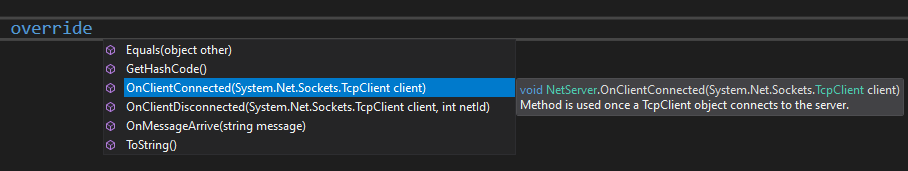
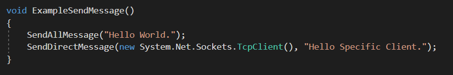
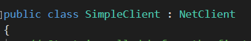
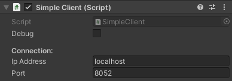
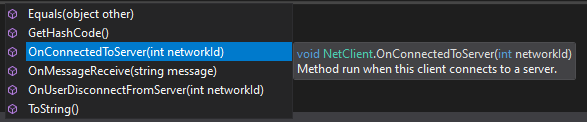

SimpleNet is a Server-Client based networking library which runs over Unity.
Setting Up:
1. Start by loading the package from the Unity Asset Store:
2. Go to Edit>Project Settings>Player>Other Settings.
Set the Api Compatibility Level to .Net 4.x
Creating Server:
3. Create a new C# script
4. Change your server script from being derived from MonoBehavior to NetServer
5. Once NetServer is derived, the script's inspector will now include a port number input.
6. Back inside the Simple Server script, three override methods will be made available:
OnClientConnected() takes in a TcpClient object and is automatically run whenever a client connects to the server.
OnClientDisconnected() takes in a TcpClient and netId, and is run every time a client disconnects from the server.
Do Note however that this method will only run when a client fails to respond to a server message
OnMessageArrive() takes in a string message and is automatically called everytime a client sends a mesasge to the server.
7. Finally the NetServer derived class also provides methods which can be called at any time to send messages to the clients.
SendAllMessage(string message) is used to broadcast all users a message.
SendDirectMessage(TcpClient client, String message) sends a message to a specific client.

Creating Client:
1. Create a new C# script
2. Change your server script from being derived by MonoBehavior to NetClient

3. Similar to the Server script, the script's inspector will now provide a field for ip address and port.

4. Back inside the Simple Client script , three override methods will now be made available:

OnConnectedToServer(int networkId) is an override method which is automatically run when the client connects to the server.
OnMessageReceive(string message) is automatically run whenever the client receives a message.
OnUserDisconnectFromServer(int networkId) is automatically run whenever a user disconnects from the server
[Note: This will only occur if the server detects it. Check OnClientDisconnected() docs in NetServer to learn more about it]
5. Finally the NetClient derivated class also provides methods which can be used to send messages to the server.
SendNetMessage(string message) is used to send a message to the server.
[Note: SendMessage() is a Monobehavior method and cannot be used to send messages to the server]